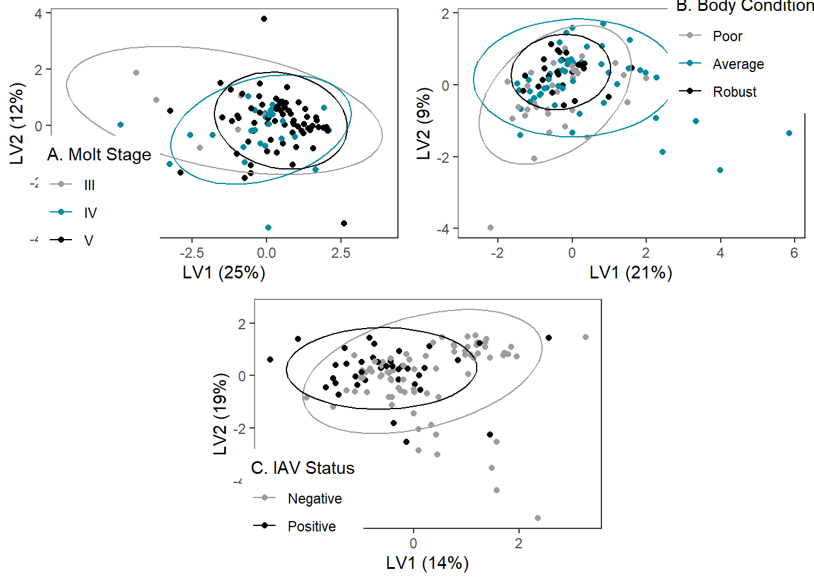

Chapter 7 Create panel figure for PLS-DA plots
7.1 Load required Libraries
##
## Attaching package: 'reshape2'## The following object is masked from 'package:tidyr':
##
## smiths7.2 Read in data
cyto <- read.csv("Output Files/cleaned_cytokine.csv")
meta <- read.csv("Output Files/metadata_cyto.csv")
mindc <- read.csv("Input Files/mindc.csv") %>%
mutate(half=value/2)
# Merge cytokine & metadata
data <- merge(cyto, meta, by="Sample")
# Prepare data
data_molt <-
data %>%
select(2:14) %>%
select_if(function(x) sum(x>0) > 11) %>%
mutate(molt.stage=data$molt.stage,
sample=data$Sample) %>%
filter(!is.na(molt.stage))
data_bc <-
data %>%
select(2:14) %>%
select_if(function(x) sum(x>0) > 11) %>%
mutate(bc=data$bc_bin,
sample=data$Sample) %>%
filter(!is.na(bc))
data_iav <-
data %>%
select(2:14) %>%
select_if(function(x) sum(x>0) > 11) %>%
mutate(iav=data$iav,
sample=data$Sample)
data_loc <-
data %>%
select(2:14) %>%
select_if(function(x) sum(x>0) >11) %>%
mutate(location=data$location,
sample=data$Sample)7.3 Replace 0 with half mindc, log, center, scale
# Molt Stage
molt_half <- data_molt
for (i in 1:nrow(molt_half)) {
for (j in 1:9) {
{if (molt_half[i,j]==0) {
k <- which(mindc==colnames(molt_half)[j])
molt_half[i,j] <- mindc[k,3]
}
else{next}
}
}
}
molt_scaled <-
molt_half %>%
mutate_at(1:9, log) %>%
mutate_at(1:9, function(x) scale(x, center=TRUE, scale=TRUE)) %>%
lapply(., c) %>%
data.frame() %>%
mutate(molt.stage=factor(molt.stage, levels=c("III", "IV", "V")))
# Body Condition
bc_half <- data_bc
for (i in 1:nrow(bc_half)) {
for (j in 1:9) {
{if (bc_half[i,j]==0) {
k <- which(mindc==colnames(bc_half)[j])
bc_half[i,j] <- mindc[k,3]
}
else{next}
}
}
}
bc_scaled <-
bc_half %>%
mutate_at(1:9, log) %>%
mutate_at(1:9, function(x) scale(x, center=TRUE, scale=TRUE)) %>%
lapply(., c) %>%
data.frame() %>%
mutate(bc=factor(bc, levels=c("Poor", "Average", "Robust")))
# IAV
iav_half <- data_iav
for (i in 1:nrow(iav_half)) {
for (j in 1:9) {
{if (iav_half[i,j]==0) {
k <- which(mindc==colnames(iav_half)[j])
iav_half[i,j] <- mindc[k,3]
}
else{next}
}
}
}
iav_scaled <-
iav_half %>%
mutate_at(1:9, log) %>%
mutate_at(1:9, function(x) scale(x, center=TRUE, scale=TRUE)) %>%
lapply(., c) %>%
data.frame() %>%
mutate(iav=factor(iav),
iav=gsub("neg", "Negative", iav),
iav=gsub("pos", "Positive", iav))
# Location
loc_half <- data_loc
for (i in 1:nrow(loc_half)) {
for (j in 1:9) {
{if (loc_half[i,j]==0) {
k <- which(mindc==colnames(loc_half)[j])
loc_half[i,j] <- mindc[k,3]
}
else{next}
}
}
}
loc_scaled <-
loc_half %>%
mutate_at(1:9, log) %>%
mutate_at(1:9, function(x) scale(x, center=TRUE, scale=TRUE)) %>%
lapply(., c) %>%
data.frame() %>%
mutate(location=factor(location))7.4 Plot!
# Molt Stage
molt_plsda <- mixOmics::plsda(molt_scaled[,1:9],
molt_scaled$molt.stage,
scale=FALSE,
ncomp=9)
molt_plsda_data <-
data.frame(x = molt_plsda$variates$X[,1],
y = molt_plsda$variates$X[,2],
molt.stage = molt_plsda$Y)
molt_plsda$prop_expl_var$X[1:2]## comp1 comp2
## 0.2516754 0.1191888molt_plsda_ggplot <-
ggplot(molt_plsda_data,
aes(x=x, y=y, col=molt.stage)) +
geom_point() +
stat_ellipse() +
labs(x="LV1 (25%)",
y = "LV2 (12%)") +
scale_color_manual("A. Molt Stage",
values=c("#9d9d9d","#008ba2", "black")) +
theme_bw() +
theme(panel.grid=element_blank(),
legend.position=c(0.14, 0.17))
# Body Condition
bc_plsda <- mixOmics::plsda(bc_scaled[,1:9],
bc_scaled$bc,
scale=FALSE,
ncomp=9)
bc_plsda_data <-
data.frame(x = bc_plsda$variates$X[,1],
y = bc_plsda$variates$X[,2],
bc = bc_plsda$Y)
bc_plsda$prop_expl_var$X[1:2]## comp1 comp2
## 0.21002116 0.09036301bc_plsda_ggplot <-
ggplot(bc_plsda_data,
aes(x=x, y=y, col=bc)) +
geom_point() +
stat_ellipse() +
labs(x="LV1 (21%)",
y = "LV2 (9%)") +
scale_color_manual("B. Body Condition",
values=c("#9d9d9d","#008ba2", "black")) +
theme_bw() +
theme(panel.grid=element_blank(),
legend.position=c(0.83, 0.82))
# IAV
iav_plsda <- mixOmics::plsda(iav_scaled[,1:9],
iav_scaled$iav,
scale=FALSE,
ncomp=9)
iav_plsda_data <-
data.frame(x = iav_plsda$variates$X[,1],
y = iav_plsda$variates$X[,2],
iav = iav_plsda$Y)
iav_plsda$prop_expl_var$X[1:2]## comp1 comp2
## 0.1434895 0.1925115iav_plsda_ggplot <-
ggplot(iav_plsda_data,
aes(x=x, y=y, col=iav)) +
geom_point() +
stat_ellipse() +
labs(x="LV1 (14%)",
y = "LV2 (19%)") +
scale_color_manual("C. IAV Status",
values=c("#9d9d9d", "black")) +
theme_bw() +
theme(panel.grid=element_blank(),
legend.position=c(0.14, 0.13))
plsda_plots <- grid.arrange(molt_plsda_ggplot, bc_plsda_ggplot, iav_plsda_ggplot,
ncol=2, nrow=2,
layout_matrix=(rbind(c(1,1,2,2), c(NA,3,3,NA))))
ggsave("Figures/plsda_manuscript.jpeg", plsda_plots, width=10, height=8, units="in")
# Location
loc_plsda <- mixOmics::plsda(loc_scaled[,1:9],
loc_scaled$location,
scale=FALSE,
ncomp=9)
loc_plsda_data <-
data.frame(x = loc_plsda$variates$X[,1],
y = loc_plsda$variates$X[,2],
location = loc_plsda$Y)
loc_plsda$prop_expl_var$X[1:2]## comp1 comp2
## 0.1917293 0.1482519